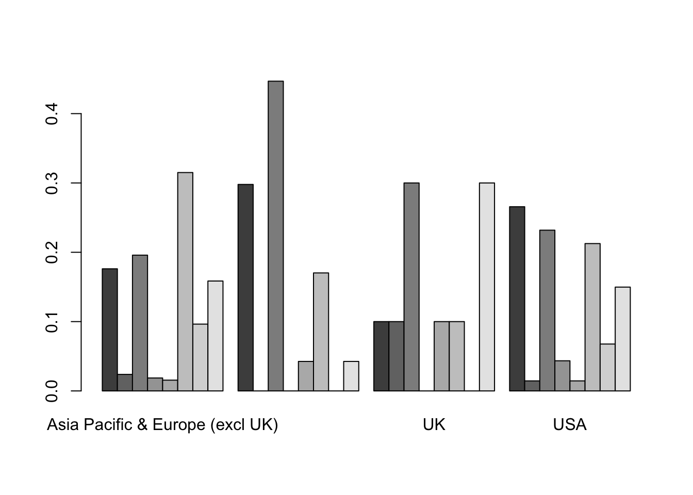
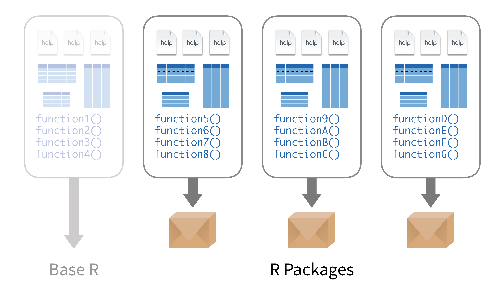
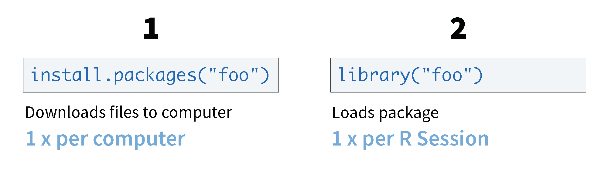

3 Teaching R and Statistics Together
One of the challenges for teaching R is that students want to get started right away without thinking about what the output should look like and what their goal actually is with programming. Encouraging students to stop and think will help them determine the best approach in R.
3.1 The Grammar of Graphics for Data Visualization
Open up the the R Notebook for Data Visualization and follow along.
A data visualization is a set of visual geometries whose aesthetics are mapped from data.
3.1.1 Geometry
- A geometry is a visual entity in space.
- Some common geometries encountered in data visualizations:
- Point
- Line
- Bar
- Point
3.1.2 Aesthetics
- An aesthetic is a visual attribute of a geometry
- Common aesthetics:
- Position on horizontal (X)
- Position on vertical (Y)
- Shape
- Size
- Color
- Hue
- Saturation (“intensity”)
- Value (“brightness”)
- Hue
- Text
- Position on horizontal (X)

- Not all aesthetics are available for every geometry
3.1.3 Data
- To visualize, must have data in row-by-column format where:
- Rows represent cases: at most one geometry per case (assuming no aggregation)
- Columns represent variables: to be mapped to aesthetic attributes
- Rows represent cases: at most one geometry per case (assuming no aggregation)

- Differences in geometry aesthetics map to differences in data variables
- Available mappings depend on whether data variable is continuous (height) or discrete (race)
- The following caveats apply:
- An aesthetic attribute can be mapped back to at most one variable
- A variable can be mapped to more than one aesthetic
- Not all mappings make sense
- An aesthetic attribute can be mapped back to at most one variable
Students often do not recognize that a categorical variable is already summarized and confuse the count/frequency for a quantitative variable rather than a statistic.
3.2 Visualization using base R graphics
The base graphics often provide a very simple way for students to get plots quickly and explore data. We will continue using the cleanTeslaBattery data. Load it now and view it. (cleanTeslaBattery data)[Data/cleanTeslaBattery.csv]
3.2.1 Histograms and boxplots
One wonderful thing about R is how intuitive the functions are, if you want a mean, the command is mean, if you want a boxplot, the command is boxplot.
Run the command boxplot(cleanTeslaBattery$MaxRangeKM). You should get the following:
boxplot(cleanTeslaBattery$MaxRangeKM) The x- and y-axis labels, main title, as well as color can be set using optional variables, xlab, ylab, main and color, respectively. Modify your command to boxplot(cleanTeslaBattery$MaxRangeKM, xlab = "All", ylab = "KM", main = "Max Range", col = "green"). R has many other colors built in and also accepts hexadecimals. Search the web to find some other possible colors to modify your graph.
Replacing boxplot() with hist will give the expected effect. Try it on one of the other quantitative variables.
Note that histograms have an optional argument to control how many bins called breaks. Try adding the option ‘breaks = 50’
Set the number of breaks to 5, notice anything strange?
Set your histogram to another color
One other feature that is nice is that comparisons between quantitative variables can easily be done as well. Suppose we want to compare the maximum range based on how frequently they supercharge their batteries. Enter the command
boxplot(MaxRangeKM ~ SuperchargeFreq, data = cleanTeslaBattery, las = 2)- Note the relational notation
y ~ x In many functions we can specify the data set to avoid extra typing
The
lasargument specifies turning the axis labels 90 degreesThe optional axis labels are as before
Colors can still be specified, but now we need a list of colors, one for each box. Add the optional argument
col = heat.colors(8). Note you must specify one for each category. There are many color palettes. You can view some with the command?colors.
Teaching tip: One of the most common problems students run into here is not putting the variables in the correct order in the ‘y ~ x’
3.2.2 Scatterplots
Scatterplots follow a very similar syntax as doing side-by-side boxplots, but using the plot function and replacing the qualitative explanatory variable with a quantitative one. Let’s explore the effect of Mileage (MileageKM) and the Maximum Range (MaxRangeKM).
plot(MaxRangeKM ~ MileageKM, data = cleanTeslaBattery, col = "darkblue")
Note that the type of point can be controlled using the optional pch = 2 command and changing the number for different point types. Color and labels are done as before. Try adjusting your colors and labeling your plot.
Another nice alternative for large data sets is the smoothScatter, however it doesn’t support the specification of data and will require explicitly referring to the x and y using the data frame name and ‘$’ symbol. Try it if you are interested.
Clearly this graph shows multiple trends due to the different battery sizes, so we would want to separate these out separately for regression or use a more advanced regression model. For simplicity we are going to add a regression line without accounting for the car model.
Regression lines are implemented using the following process:
- Fit and save the model to the data using
lm()(x and y are specified as in the plot). This model is used for all other steps. - Add the line to the scatterplot that has already been created using
abline()applied to the model you have saved. Colors for the line can be specified as before. - Summarize the model using
summary().
Try it.
plot(MaxRangeKM ~ MileageKM, data = cleanTeslaBattery, col = "darkblue")
line = lm(MaxRangeKM ~ MileageKM, data = cleanTeslaBattery)
abline(line, col = "red")
summary(line)
Call:
lm(formula = MaxRangeKM ~ MileageKM, data = cleanTeslaBattery)
Residuals:
Min 1Q Median 3Q Max
-186.380 -4.404 14.744 28.588 149.153
Coefficients:
Estimate Std. Error t value Pr(>|t|)
(Intercept) 3.598e+02 2.389e+00 150.597 <2e-16 ***
MileageKM 3.313e-05 3.442e-05 0.962 0.336
---
Signif. codes: 0 '***' 0.001 '**' 0.01 '*' 0.05 '.' 0.1 ' ' 1
Residual standard error: 58.81 on 1336 degrees of freedom
(1 observation deleted due to missingness)
Multiple R-squared: 0.0006928, Adjusted R-squared: -5.522e-05
F-statistic: 0.9262 on 1 and 1336 DF, p-value: 0.336Teaching tip Students frequently forget to create the plot first. The entire R chunk must be run in RMarkdown to preview the image.
The correlation can be computed using the cor function. Look up how to use it using ?cor and try it.
3.2.3 Bar graphs
Categorical data isn’t much harder, but does require a preprocessing step for base graphics. Let’s create a boxplot of the Supercharging Frequency. We will go straight to grouped bar plots. Let’s summarize the relationship between supercharging frequency and the location. This is done in three steps:
- tabulate (using
table, stored astble) - compute conditional percentages (
prop.table, stored asptable) - plot (
barplot)
Try it:
tble = table(cleanTeslaBattery$SuperchargeFreq, cleanTeslaBattery$Location)
ptable = prop.table(tble,2)
barplot(ptable, beside = TRUE) Note the organization of the table and the relationship between the rows and columns.
We can also add a legend and a location with the options legend.text = TRUE and args.legend = list(x = "topright").
Try adding them to your plot.
Note, there are many options for the placement of the legend other than “topright” that you may want to use if the legend overlaps your bars. These include “bottomright”, “bottom”, “bottomleft”, “left”, “topleft”, “top”, “topright”, “right”, and “center.”
Set the main title and colors (the number of colors should be the same as the number of rows in the table). A quick way to get the number of colors is to count the number of levels of a factor. You can replace the count with length(levels(vblname)), and substitute your vblname.
A bar plot for a single variable can be accomplished by only passing in one variable. Try it on one of the other categorical variables.
3.3 What is a package?
Packages are collections of R functions, data, and compiled code in a well-defined format. The directory where packages are stored is called the library. R comes with a standard set of packages, called the base package. Others are available for download and installation.

Packages that are curated, maintained, and reviewed are stored on the CRAN (Comprehensive R Archive Network).

Once installed, packages have to be loaded into the session to use the functions stored within the package.

If you ever need R to do something that is not obvious, there is probably a package for that. Many packages also provide vignettes or publish background and examples in the Journal of Statistical Software.
One of the more popular packages of packages is the tidyverse, which includes packages such as dplyr, ggplot2, and readr which make using R for data cleaning, graphics, and data science. We will explore a few of these packages today, starting with ggplot2 and the grammar of graphics.
3.4 Package ggplot2
The package ggplot2 stands for grammar of graphic plots. It works to layer details onto a graphic map data to specific aesthetics using specific geometries. If you have not already done so, install the ggplot2 package.
install.packages("ggplot2")Open up the the R Notebook for Data Visualization and follow along.
Now load the package into R using either library() or require()
library(ggplot2)Let’s make a graphic for the Tesla data:
tesla<-read.csv("Data/cleanTeslaBattery.csv")Your Turn 1 Talk in a group - what relationship do you expect to see in the tesla data between the age of the battery (Battery AgeDays) and the amount of mileage put on the car since the battery was installed (MileageSinceNewKM)? (No peeking!)
Run the following code in your notebook to make a graph, paying strict attention to spelling, capitalization, and parentheses.
ggplot(data=tesla) +
geom_point(mapping=aes(x=BatteryAgeDays, y=MileageSinceNewKM))
Notice a few key things.
ggplot(data)initializes the plot
- adding a
+after a line of ggplot code adds a new layer
- start with the geometry
- then specify the aesthetics
Here is a similar graphic code with annotation.
Therefore, you can use this code template to make thousands of graphs with ggplot2.
ggplot(data = <DATA>) +
<GEOM_FUNCTION>(mapping = aes(<MAPPINGS>))Let’s add on some more layers! What if we want to make the variable Replacement Battery to a color aesthetic?
ggplot(data=tesla) +
geom_point(mapping=aes(x=BatteryAgeDays, y=MileageSinceNewKM, color=ReplacementBatt))If we didn’t care about mapping the new variable to an aesthetic, but wanted to change the color, that would come outside of the aes() function.
ggplot(data=tesla) +
geom_point(mapping=aes(x=BatteryAgeDays, y=MileageSinceNewKM), color="blue")There are a lot of resources available, including a the “ggplot2 Cheatsheet”
Your Turn 2 Make the following density plot, using the Cheatsheet to help you. What does the plot tell you about the Tesla driver habits in different regions?
3.4.1 Layering Graphics
To get a better idea about how ggplot2 layers aesthetics and and specific geometries onto a graphic, check out the ggplot flipbook which demonstrates how each layer modifies the graphic.
3.4.2 Additional Resources
There are a lot of resources for ggplot2, here are three good places to start:
The data visualisation and graphics for communication chapters in R for data science. R for data science is designed to give you a comprehensive introduction to the
tidyverse, and these two chapters will you get up to speed with the essentials ofggplot2as quickly as possible.If you’d like to take an online course, try Data Visualization in R With ggplot2 by Kara Woo.
If you want to dive into making common graphics as quickly as possible, I recommend The R Graphics Cookbook by Winston Chang. It provides a set of recipes to solve common graphics problems.
If you’ve mastered the basics and want to learn more, read ggplot2: Elegant Graphics for Data Analysis. It describes the theoretical underpinnings of ggplot2 and shows you how all the pieces fit together. This book helps you understand the theory that underpins ggplot2, and will help you create new types of graphics specifically tailored to your needs. The book is not available for free, but you can find the complete source for the book at https://github.com/hadley/ggplot2-book.
3.5 Statistical Inference
In this section we will cover some of the basic tools for statistical inference covered in an introductory statistics class.
A notebook to work along is found in notebook for inference
3.5.1 Linear Regression
Let’s go back to the Tesla Battery Data from earlier. We did linear regression when we added the regression line earlier, but now we will explore some of the other available tools with regression.
cleanTeslaBattery = read.csv("Data/cleanTeslaBattery.csv")Here is a look at a scatterplot of the data
library(ggplot2)
ggplot(data=cleanTeslaBattery) + geom_point(aes(x=MileageKM, y=WattHoursPerKM))Implement the linear model from before to look at the relationship between the Mileage (MileageKM) and Watt Hours Per KM (WattHoursPerKM) and assign the model to the variable mod
mod = lm(WattHoursPerKM ~ MileageKM, data = cleanTeslaBattery)
summary(mod)
Call:
lm(formula = WattHoursPerKM ~ MileageKM, data = cleanTeslaBattery)
Residuals:
Min 1Q Median 3Q Max
-80.060 -26.278 -11.197 8.352 206.763
Coefficients:
Estimate Std. Error t value Pr(>|t|)
(Intercept) 2.439e+02 1.743e+00 139.901 < 2e-16 ***
MileageKM -1.766e-04 2.500e-05 -7.063 2.63e-12 ***
---
Signif. codes: 0 '***' 0.001 '**' 0.01 '*' 0.05 '.' 0.1 ' ' 1
Residual standard error: 42.5 on 1315 degrees of freedom
(22 observations deleted due to missingness)
Multiple R-squared: 0.03655, Adjusted R-squared: 0.03582
F-statistic: 49.89 on 1 and 1315 DF, p-value: 2.628e-12We can also easily inspect the residuals by calling the residual() function on the model. Try it:
hist(residuals(mod))
Additionally transforms of any of the variables can be performed in the following way:
lm(WattHoursPerKM ~ log(MileageKM), data = cleanTeslaBattery)
Call:
lm(formula = WattHoursPerKM ~ log(MileageKM), data = cleanTeslaBattery)
Coefficients:
(Intercept) log(MileageKM)
286.59 -5.02 lm(sqrt(WattHoursPerKM) ~ MileageKM, data = cleanTeslaBattery)
Call:
lm(formula = sqrt(WattHoursPerKM) ~ MileageKM, data = cleanTeslaBattery)
Coefficients:
(Intercept) MileageKM
1.555e+01 -5.510e-06 Finally, we left out the correlation coefficient. The call for the correlation coefficient is a little different as it doesn’t use relations cor(x,y, use = "pairwise.complete.obs", method = "pearson"). Try the command here for the Mileage and Watt Hours Per KM.
Note that the use option has been specified to omit pairs of correlations where there is an NA, and the method controls the type of correlation.
3.5.2 t-tests
Here is a very quick overview of t-tests. We are going to take a look at the difference in weight gain be smoking and non-smoking mothers in Kings County. We will use data on King County births.
Kings <- read.csv("Data/KingCounty2001.csv") Take a look at the relationship between smoker and wgain.
boxplot(wgain ~ smoker, data = Kings )
summary(Kings$smoker) N Y
2325 175 two-sample t-test syntax follows a simple format t.test(relationship, data, type of alternative) specify the type of alternative, either “greater”, “less” or “two.tailed”, using the alternative option.
t.test(wgain ~ smoker, data = Kings, alternative = "greater")
Welch Two Sample t-test
data: wgain by smoker
t = -0.65319, df = 189.21, p-value = 0.7428
alternative hypothesis: true difference in means is greater than 0
95 percent confidence interval:
-3.083485 Inf
sample estimates:
mean in group N mean in group Y
32.21806 33.09143 Note that confidence intervals are included, but the alternative should be “two.sided.”
One-sided t-tests require specifying only a single quantitative variable and also specifying the value from the null hypothesis. An example for testing that the mean wgain is different from 9.4 is
t.test(Kings$wgain, mu = 9.4, alt = "two.sided")
One Sample t-test
data: Kings$wgain
t = 85.31, df = 2499, p-value < 2.2e-16
alternative hypothesis: true mean is not equal to 9.4
95 percent confidence interval:
31.75331 32.80509
sample estimates:
mean of x
32.2792 Other options like the conf.level are described under the help for the function.
Try computing a 90% confidence interval for the mean gest.
3.5.3 Using simulation to teach reinforce concepts
The R community has many powerful interactive tools written in R to help teach R.
We are going to look at one of the tools offered at www.artofstat.com
Here is an example of how we might use one of these to help students learn the Central Limit Theorem. These are the instructions I would give students in class:
- Go to the page Sampling Distribution Simulator (Art of Stats)
- Select on of the real population datasets. Sketch the population distribution you are shown. What are the mean and standard deviation (label appropriately)?
- Adjust the sample size to 5 and draw 1,000 samples. Sketch the sampling distribution. Repeat this 5 times (reset in between) sketching the sampling distribution. Record the mean and standard deviation of the sampling distribution each time. What do you observe about the sampling distribution?
- Adjust the sample size to 10 and draw 1,000 samples. Sketch the sampling distribution. Repeat this 5 times (reset in between) sketching the sampling distribution. Record the mean and standard deviation of the sampling distribution each time. What do you observe about the sampling distribution?
- Adjust the sample size to 20 and draw 1,000 samples. Sketch the sampling distribution. Repeat this 5 times (reset in between) sketching the sampling distribution. Record the mean and standard deviation of the sampling distribution each time. What do you observe about the sampling distribution?
- Adjust the sample size to 20 and draw 1,000 samples. Sketch the sampling distribution. Repeat this 5 times (reset in between) sketching the sampling distribution. Record the mean and standard deviation of the sampling distribution each time. What do you observe about the sampling distribution?
- Adjust the sample size to 100 and draw 1,000 samples. Sketch the sampling distribution. Repeat this 5 times (reset in between) sketching the sampling distribution. Record the mean and standard deviation of the sampling distribution each time. What do you observe about the sampling distribution?
- As you increase the sample size, what do you observe about the shape of the sampling distribution? Etc.
Here is a link to the full activity
3.5.4 Tools for resampling
We won’t cover this in great depth here, but we will briefly explore what can be done here: Bootstrapping app
3.5.5 Other tools commonly found in introductory statistics courses
3.5.5.1 ANOVA
We demonstrated t-tests earler, and the syntax for ANOVA is quite similar.
Teaching tip When teaching non-majors incorporating data from the research of faculty teaching courses from other disciplines can increase student engagement and course relevance.
For this section we are going to work with a dataset from a cancer drug development project that is part of a biology faculty member’s ongoing research at our campus, the data came from one of the student projects. Below is an image of one of the tumors.

CancerTumor
The measurements in the file are the percent of tumor growth under various drug treatments. Tumor.csv. Load the data now and inspect the dataset.
Construct a graphical summary of your data using one of the tools from earlier.
We will also construct a numerical summaries of each group using the doBy package. Install and load it now.
For this I define a helper function:
msd = function (x) {c(m = mean(x), stdev = sd(x))}We apply this function using summaryBy.
To run an ANOVA use the command aov() by specifying the relationship and the data, as you did for summarizing the data.
mod = aov(Growth ~ Treatment, data = Tumor)Note that there is something missing that most intro stats students are asked for, what is it?
This can be fixed by wrapping the aov command with a summary(). Try it.
Post-hoc tests can be run by saving the ANOVA model to a variable and then passing it to TukeyHSD().
Try it here:
TukeyHSD(mod) Tukey multiple comparisons of means
95% family-wise confidence level
Fit: aov(formula = Growth ~ Treatment, data = Tumor)
$Treatment
diff lwr upr p adj
Control-Avastin 0.002222222 -0.029180472 0.033624916 0.9976809
Tor+Ava-Avastin -0.037222222 -0.068624916 -0.005819528 0.0137317
Torisel-Avastin -0.004444444 -0.035847138 0.026958250 0.9821827
Tor+Ava-Control -0.039444444 -0.070847138 -0.008041750 0.0080067
Torisel-Control -0.006666667 -0.038069361 0.024736027 0.9437365
Torisel-Tor+Ava 0.032777778 0.001375084 0.064180472 0.0374652There are other functions for the other types of post-hoc tests.
3.5.6 Paired t-test
Paired t-tests require data in the wide format, that is two columns side by side, perhaps like this
pairdat = data.frame(pre=c(23,20,30,29),post=c(25,21,27,31))
pairdat pre post
1 23 25
2 20 21
3 30 27
4 29 31Note this is for example only, not for validity.
t.test(pairdat$pre, pairdat$post, paired=TRUE)
Paired t-test
data: pairdat$pre and pairdat$post
t = -0.42008, df = 3, p-value = 0.7027
alternative hypothesis: true difference in means is not equal to 0
95 percent confidence interval:
-4.287869 3.287869
sample estimates:
mean of the differences
-0.5 3.5.6.1 Testing for Proportions
For simplicity we are going to continue with the cleanTeslaBattery. Suppose we want to look at the relationship between Country and Model.
Create a two-way table and a bar plot for these variables.
cleanTeslaBattery = read.csv("Data/cleanTeslaBattery.csv")
tbl = table(cleanTeslaBattery$Location,cleanTeslaBattery$Model)
tbl
Model 3 LR Model S 100D Model S 60
Asia Pacific & Europe (excl UK) 0 3 22
Canada 0 0 3
UK 0 0 1
USA 4 2 20
Model S 60D Model S 70 Model S 70D
Asia Pacific & Europe (excl UK) 0 8 99
Canada 1 0 0
UK 1 0 0
USA 4 0 4
Model S 75 Model S 75D Model S 85
Asia Pacific & Europe (excl UK) 28 20 376
Canada 1 0 20
UK 0 1 7
USA 10 7 72
Model S 85D Model S 90 Model S 90D
Asia Pacific & Europe (excl UK) 88 1 90
Canada 9 2 2
UK 2 0 0
USA 13 0 15
Model S 90D 2015 Model S P100D
Asia Pacific & Europe (excl UK) 3 8
Canada 0 0
UK 0 0
USA 10 0
Model S P85 Model S P85+ Model S P85D
Asia Pacific & Europe (excl UK) 141 45 75
Canada 5 1 1
UK 0 0 0
USA 32 2 15
Model S P90D Model X 100D Model X 60D
Asia Pacific & Europe (excl UK) 4 7 0
Canada 0 1 1
UK 0 0 0
USA 3 4 0
Model X 75D Model X 90D Model X P90D
Asia Pacific & Europe (excl UK) 4 11 1
Canada 0 0 0
UK 0 0 0
USA 0 5 0
Unspecified 85 kWh
Asia Pacific & Europe (excl UK) 24
Canada 0
UK 0
USA 0Chi-square is as simple as running chisq.test() on the two-way table.
chisq.test(tbl)
Pearson's Chi-squared test
data: tbl
X-squared = 254.16, df = 69, p-value < 2.2e-16Tests for proportions require the prop.test command and require just inputting the desired counts and/or population proportions. We won’t do an application here, but if 23 of 120 have a trait and we would like to see if the proprtion is significantly greater than 0.15, we might use the command
prop.test(23,120, p=0.15, alternative = "greater")
1-sample proportions test with continuity correction
data: 23 out of 120, null probability 0.15
X-squared = 1.3235, df = 1, p-value = 0.125
alternative hypothesis: true p is greater than 0.15
95 percent confidence interval:
0.136025 1.000000
sample estimates:
p
0.1916667 As with the t-tests, notice that the confidence interval is an added bonus, but requires the two-sided option.
A two-sample test for proportions may be run similarly with a slight modification:
prop.test(c(31,40),c(60,85), alternative = "greater")
2-sample test for equality of proportions with continuity
correction
data: c(31, 40) out of c(60, 85)
X-squared = 0.14289, df = 1, p-value = 0.3527
alternative hypothesis: greater
95 percent confidence interval:
-0.1066671 1.0000000
sample estimates:
prop 1 prop 2
0.5166667 0.4705882 where the first list specifies the counts with the trait in each of the two groups and the second list consists of the sample sizes for each of the two groups.